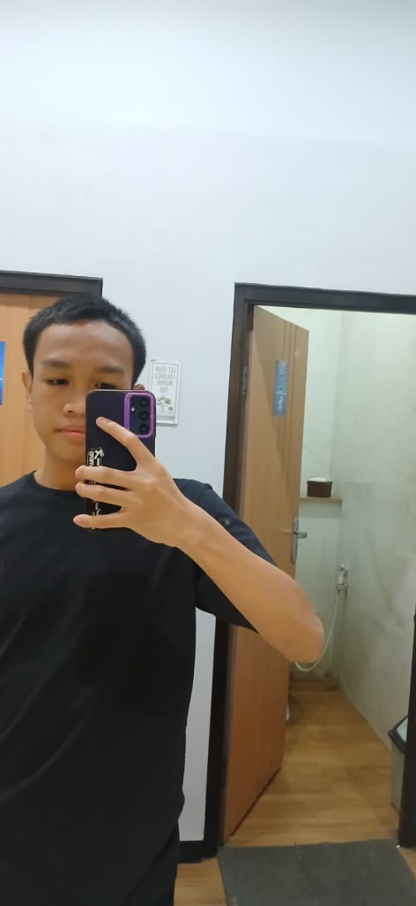
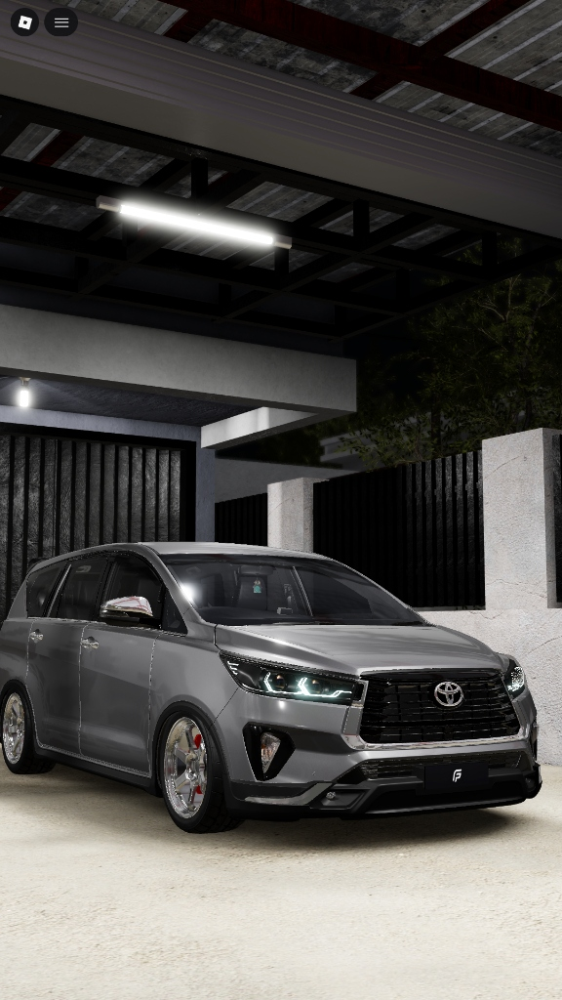
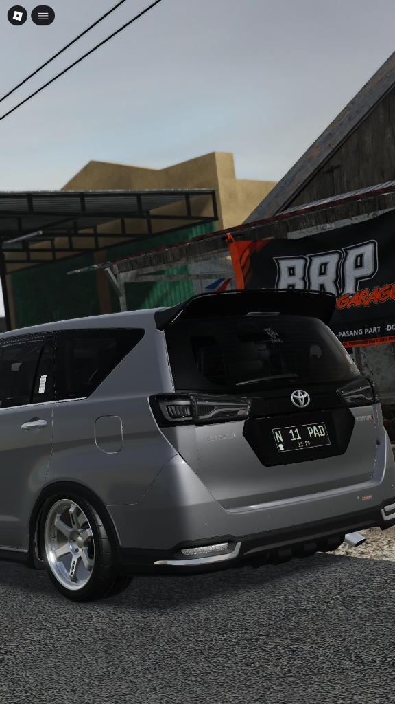
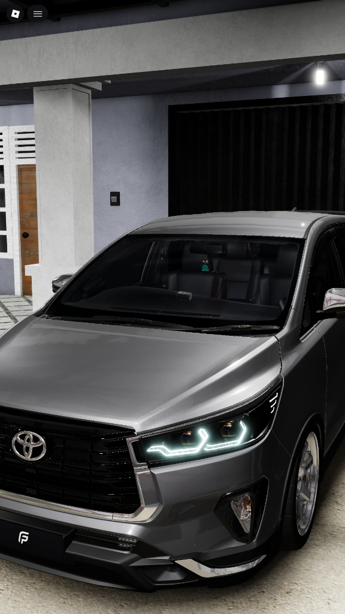
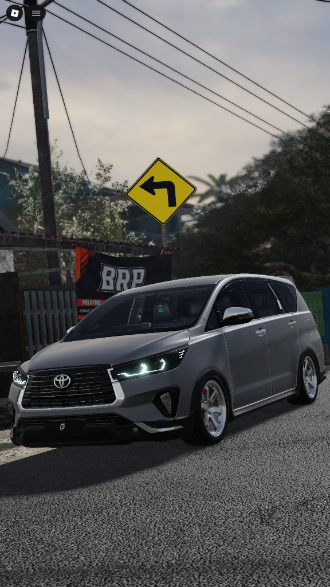

HALO, SAYA DAFIN ORVALA APRILLO.
SISWA SMK TELKOM MALANG.
Selamat datang di website portofolio resmi saya. Website ini saya susun sebagai sarana dokumentasi profil diri, karya desain grafis & editing video, eksplorasi teknik komputer dan jaringan (TKJ), serta dokumentasi ketertarikan pada dunia modifikasi otomotif. Terima kasih atas kunjungan Bapak/Ibu Guru dan rekan-rekan sekalian. Silakan menjelajahi portofolio ini.


GARASI RUMAH 🔍
BRP GARAGE 🔍
CARPORT RUMAH 🔍
TIKUNGAN JALAN 🔍Desain Grafis & Video Editing Kreatif
Penggabungan keahlian desain identitas visual (logo, branding media, tipografi, dan poster modern) dengan teknik pasca-produksi video sinematik dinamis (pemotongan ritme audio, color grading presisi, transisi halus, dan reels resolusi tinggi).
Dokumentasi & Modifikasi Innova Venturer
Dokumentasi antusiasme dan karya estetika otomotif pada kendaraan Toyota Innova Venturer 2021 yang mengusung konsep clean stance, fitment velg proporsional, instalasi custom running LED DRL, serta perawatan detailing eksterior mobil.
Simulasi Jaringan & Portofolio Digital
Penerapan kompetensi keahlian Teknik Komputer dan Jaringan (TKJ) SMK Telkom Malang dalam simulasi topologi jaringan komputer LAN/WLAN, konfigurasi perangkat jaringan, serta perancangan antarmuka web portofolio interaktif berbasis JavaScript murni.
DAFIN ORVALA APRILLO
Perkenalkan, nama saya Dafin Orvala Aprillo, siswa aktif dari SMK Telkom Malang (Moklet) pada kompetensi keahlian Teknik Komputer dan Jaringan (TKJ). Dalam menempuh pendidikan di SMK Telkom Malang, saya mendalami infrastruktur jaringan komputer sekaligus aktif mengeksplorasi minat dan keterampilan di bidang Desain Grafis dan Video Editing. Di samping fokus akademik, saya memiliki kecintaan dan minat yang sangat besar di dunia modifikasi otomotif, khususnya konsep modifikasi clean stance, kerapian fitment velg, serta instalasi custom LED dan Running DRL. Dalam setiap karya dan kegiatan, saya senantiasa menjunjung tinggi kedisiplinan, ketelitian, etos kerja profesional, dan kesantunan.
Latar Belakang & Pendidikan: Saya menempuh studi di SMK Telkom Malang dengan program keahlian Teknik Komputer dan Jaringan (TKJ). Melalui kurikulum sekolah yang berdisiplin tinggi dan berbasis teknologi terdepan, saya terlatih untuk berpikir analitis, memahami konfigurasi perangkat jaringan, serta menyelesaikan berbagai tantangan teknologi secara mandiri maupun kolaboratif.
Kreativitas Desain Grafis & Video Editing: Ketertarikan saya terhadap estetika visual mendorong saya untuk mengasah keahlian sebagai desainer grafis dan editor video. Saya terbiasa mengolah komposisi tata letak grafis, poster promosi, identitas visual, serta memproduksi video sinematik dengan ritme audio dinamis, pewarnaan (color grading) berkarakter, dan format video reels resolusi tinggi.
Minat Mendalam di Dunia Mobil: Dunia otomotif adalah wadah ekspresi seni dan ketelitian bagi saya. Saya sangat mengagumi konsep modifikasi Clean Stance dan Daily Cruiser—di mana kendaraan tampil berkarakter, rapi, dan terawat tanpa mengurangi keselamatan maupun kenyamanan berkendara harian. Minat saya mencakup penentuan fitment velg yang proporsional, perancangan instalasi pencahayaan kustom berupa Custom Running LED & DRL, hingga perawatan detailing eksterior mobil agar senantiasa prima.
KOMUNIKASI, MASUKAN, & KOLABORASI PROYEK
Bapak/Ibu Guru, rekan-rekan, atau pengunjung yang ingin memberikan masukan pembelajaran, mendiskusikan pengembangan proyek web, maupun menjalin silaturahmi, dapat menyampaikan pesan melalui formulir di samping atau melalui saluran media sosial resmi saya di bawah ini.
MEDIA SOSIAL RESMI
Tautan langsung menuju akun media sosial resmi saya: